This post is chapter 8 of the report "Microarchitecture of the Apple M6 Neural Engine: An Empirical Study Based on Compiled Artifacts, Execution Traces, and Power Measurements", reproduced unchanged. Full report: web; data and tools: GitHub. Section, figure and table numbers follow the report.
Chapter 7 concerns the compute performance of the ANE, and this chapter turns to its numerical precision and internal arithmetic behavior. The inputs and outputs of the ANE are both FP16, but this is only the storage format of data in DRAM and L2. It does not reveal the format in which the multiply-accumulate array accumulates internally, how overflow is handled, or how results are rounded, and these details determine whether a network can obtain results on the ANE that agree with those on the CPU. We constructed specific inputs and weights, compared the outputs of the ANE and the CPU, and determined each of these behaviors item by item. The main conclusions of this chapter are four. First, the accumulator for FP16 convolutions and matrix multiplications is a 32-bit fixed-point number (Q15.16); at any point during accumulation, if its absolute value reaches 32768, the result becomes infinity and does not recover. Second, the bias is the initial value of this fixed-point accumulator, rather than being added in floating point to the output. Third, the INT8 path uses a separate 32-bit integer accumulator, elementwise operations take a floating-point path, and neither path has the 32768 limit. Fourth, activation functions are implemented by a 33-point lookup table with linear interpolation, and the table values for some functions are fitted values rather than exact samples of the function. The basic behavior of the FP16 multiply-accumulate path was retested on the M4, and the results are identical to those on the M6 (Section 8.1).
8.1 Test Methodology
To determine the behavior of the accumulator, we need to control precisely each product that participates in the accumulation. For this purpose we designed a 1×1 test convolution whose input x has the shape [1, 64, 1, 256], that is, 64 input channels and a width of 256 columns. For a 1×1 convolution, the value of output channel 0 at column j equals the sum of the products of the 64 input values in that column with the 64 weights of output channel 0, that is, Σ_c x[c, j] · w[c], and it is independent of the other columns. We therefore need only set the weights of output channel 0 to the numerical values under test and fill each column with different inputs; each column then constitutes an independent test case, so that a single model can check 256 cases at once (tools: numerics2.py through numerics6.py).
However, a convolution this small is placed on the CPU by Core ML, and what would be measured is then no longer the behavior of the ANE. To make the model actually execute on the ANE, we zero-padded the output channels to 2048 and added to the model an unrelated "companion" branch (four convolution layers followed by ReLU), so that Core ML assigns the entire model to the ANE. The raw output of the test convolution is read out as a separate model output. We confirmed that the model actually executed on the ANE by two means. First, we observed ANE interrupts during execution (tool: anewho.c). Second, we executed the same model once more in CPU_ONLY mode, and its results differ from those of the ANE 〔IOReport, numerical〕.
The expected value of each case is determined from both the FP16 result of the CPU and the exact float64 value. Elementwise operations were tested by the same method. The test methods for the INT8 path and for activation functions are described in Sections 8.3 and 8.5, respectively. All numerical experiments were completed on the M6. Among them, a set of basic tests examining the range, overflow, subnormal inputs, rounding and scale of the FP16 multiply-accumulate path was repeated once on the M4 with the same program (data: numerics2_m6.txt, numerics2_m4.txt).
8.2 FP16 Multiply-Accumulate Path: Fixed-Point Accumulator
8.2.1 Range and Overflow
We first test the range of the accumulated result. Table 8-1 lists representative cases (data: numerics2_m6.txt, numerics3_m6.txt) 〔numerical〕.
Table 8-1. Range and overflow of the FP16 multiply-accumulate path
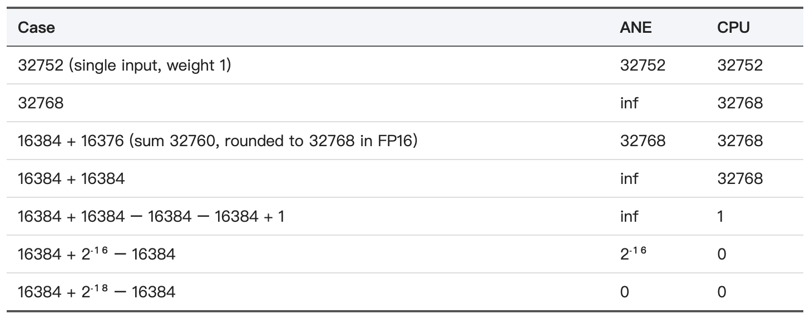
Table 8-1 illustrates three properties of the accumulator. First, the absolute value of an accumulated result is bounded by 2¹⁵: the case with a sum of 32760 is output correctly (rounded to 32768 in FP16 at the output), whereas the case whose sum is exactly 32768 becomes infinity. Second, overflow is irreversible: once the value at some point during accumulation reaches 32768, the final result remains infinity even if subsequent products reduce it to a smaller value. Third, the accumulator retains precision that FP16 cannot represent. Adding 2⁻¹⁶ to 16384 and then subtracting 16384 yields 2⁻¹⁶ on the ANE, whereas the FP16 computation on the CPU yields 0. This shows that the resolution during accumulation reaches 2⁻¹⁶, much finer than the resolution of FP16 near 16384 (16).
Together, these three properties indicate a 32-bit fixed-point accumulator with 1 sign bit, 15 integer bits and 16 fractional bits, in which the least significant bit (LSB) is 2⁻¹⁶ and the representable absolute value is below 2¹⁵. To confirm that this scale is fixed, we set the weight to 1, 16, 256 and 4096 and repeated the above tests. The overflow point remained 32768, and the LSB remained 2⁻¹⁶. This indicates that the compiler does not adjust the scale of the accumulator on a per-layer basis 〔numerical〕. Section 5.7.3 states that the NE field group of the TD contains an "accumulator bias shift" field and a 5-bit "output right shift" field. These fields may serve other data formats, and in the FP16 convolutions tested in this report the scale did not change 〔compiler, inferred〕.
We also examined whether partial sums in FP16 occur during accumulation. Bryngelson [5] reports that the first level of the reduction tree on the M1 sums in FP16 with radix 4. If the M6 does the same, a +1 inserted in the range ±2048 would be discarded in an FP16 partial sum, because the resolution of FP16 near 2048 is 2. In measurements, the +1 was not discarded regardless of where it was placed, which indicates that the M6 accumulation contains no intermediate partial sums stored at FP16 precision 〔numerical〕. Figure 8-1 gives the data formats of the FP16 multiply-accumulate path.
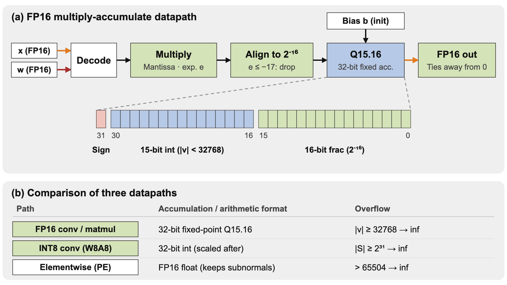
Figure 8-1. Data formats of the FP16 multiply-accumulate path. The upper two rows show the computation of FP16 convolutions and matrix multiplications: input decoding, multiplication, alignment of the products to 2⁻¹⁶ according to the sum of exponents, Q15.16 fixed-point accumulation with the bias as the initial value, and rounding of the output. The "mantissa product and exponent sum" is an internal representation speculated from measurements. The next row compares the numerical formats of three paths: FP16 multiply-accumulate, INT8 multiply-accumulate, and elementwise operations.
8.2.2 Alignment of Tiny Products
The fixed-point accumulator can represent only integer multiples of 2⁻¹⁶, so each product must be aligned to 2⁻¹⁶ before it enters the accumulator. We found that whether a product is retained during alignment depends not on its actual magnitude but on the sum of the exponents of its two factors. To distinguish between these two possibilities, we specifically constructed cases whose exponent sum is −17 but whose mantissa product is close to 2. The results are shown in Table 8-2 (tools: numerics5.py and numerics6.py; data: numerics5_m6.txt, numerics6_m6.txt) 〔numerical〕.
Table 8-2. Treatment of products with small exponent sums (actual product value within 2 LSB)
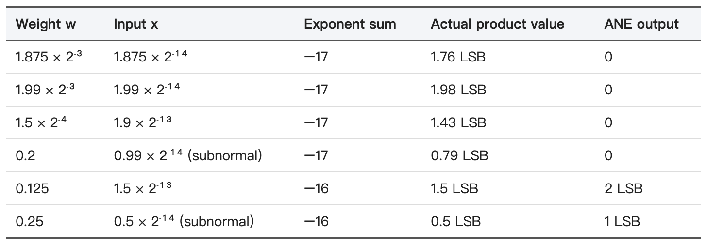
Table 8-2 shows that the rule depends on exponents. When the sum of the exponents of x and w (with the exponent of a subnormal number counted as −14) is not less than −16, the product is aligned to 2⁻¹⁶ with rounding, with halfway cases rounded away from zero. When the exponent sum is not greater than −17, the entire product is discarded, even though its actual value is close to 2 LSB. We speculate that the multiplier outputs the mantissa product (lying in the interval [1, 4)) and the exponent sum, and that the alignment shifter retains a rounding bit only for products whose exponent sum is not less than −16, while smaller products are shifted out directly 〔inferred〕. This rule implies that when a very small activation is multiplied by a small weight, it is truncated, and the amount truncated is at most close to 2 LSB (about 3 × 10⁻⁵). This is coarser than conventional rounding, in which a product is discarded only when it is smaller than half an LSB.
8.2.3 Bias
A convolution bias can be added at two positions: as the initial value of the accumulator, or as a floating-point addition after accumulation is complete and the result has been converted to FP16. The two approaches behave differently with respect to overflow and rounding, so they can be distinguished experimentally. We set all weights to 1, so that output channel 0 equals Σx + bias. The results are shown in Table 8-3 (data: numerics5_m6.txt) 〔numerical〕.
Table 8-3. Positions at which the bias is added
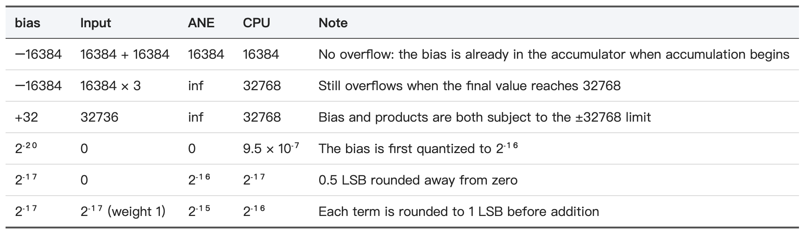
The first row is the most instructive. The sum of two 16384 values would be expected to overflow in the accumulator, but with a bias of −16384 the result is correct and does not overflow. This is possible only if the bias enters the accumulator before the products. The subsequent rows further show that the bias is rounded away from zero to 2⁻¹⁶ before it enters the accumulator. It follows that the bias is the initial value of the fixed-point accumulator 〔numerical〕. This design has two consequences. A large bias combined with large activations is more likely to overflow. Conversely, a large negative bias can offset part of the positive products, so that the intermediate value does not overflow.
8.2.4 Input Decoding and Output Rounding
After accumulation completes, the fixed-point result is converted to the FP16 output. This conversion rounds to nearest, with halfway cases rounded away from zero, rather than using the IEEE 754 default of rounding halfway cases to even. For example, 2049 is output as 2050, −2049 as −2050, 4098 as 4100, and 1 + 2⁻¹¹ as 1 + 2⁻¹⁰. Under round-half-to-even, these values would be 2048, −2048, 4096 and 1, respectively. The output for −0 is +0 〔numerical〕.
Input decoding also has a nonstandard feature: FP16 values whose exponent field is all ones (that is, inf and NaN) are decoded as ordinary numbers. +inf is decoded as 2¹⁶, the NaN 0x7E00 as 1.5 × 2¹⁶, and 0x7FFF as 131008. These decoded values exceed the range of the accumulator and therefore cause the result to overflow to inf. Bryngelson [5] reports that NaN becomes +inf on the ANE, and the decoding described above explains the cause of this phenomenon. On the other hand, large inputs within the normal range do not overflow ahead of the accumulator: 65504 × 2⁻⁴ yields the correct 4094 〔numerical〕.
8.3 INT8 Path: 32-Bit Integer Accumulator
The accumulator of the INT8 path cannot be tested by the method of Section 8.1, because activation quantization in coremltools requires calibration, so the scaling factors are not under control. Instead, we manually constructed in MIL the structure "quantize, dequantize, then convolve with Int8 weights", so that the quantized inputs and weights are all the same Int8 value (127 or −128). In this way, the integer accumulated sum S at each output point can be computed exactly. The scaling factors of both the inputs and the weights are taken as 2⁻ᵏ, so the theoretical output is S × 2⁻²ᵏ. Each model was executed in both CPU_AND_NE and CPU_ONLY modes. Throughout each group of runs, the IOReport interrupt count was used to confirm that the ANE took part in the computation (tool: numerics_i8.py; data: numerics_i8/) 〔numerical, IOReport〕. The interrupt count is aggregated over a group, so it cannot indicate on which device each model executed. Agreement between ANE and CPU outputs also cannot serve as a criterion that a model fell back to the CPU, because a correct ANE result may happen to equal the CPU result. Table 8-4 lists only those models whose ANE output differs from their CPU_ONLY output. Their results cannot have come from the CPU, and therefore they were certainly computed by the ANE. For the models not listed, the basis of judgment is the dispatch rule of Section 5.2 rather than the outputs. A model with an input channel count N of 120000 or more has a tensor dimension exceeding the 65536 limit of Table 5-2 and cannot be placed on the ANE, while a model with N not exceeding 1024 is so small in computation that the segmenter's cost rule would place it on the CPU 〔inferred〕. The model with N = 2080 is an example in which the outputs agree but which need not have executed on the CPU. Both the ANE and the CPU output 2048, which is the correct rounding of the theoretical value 2047.6. It is most likely computed by the ANE, and its result merely coincides with the CPU result. The conclusions of Table 8-4 do not depend on these points. In addition, to reach S = 2³¹ on the ANE without being limited by the channel-count ceiling, we switched to kh×1 convolutions with N = 65536. Table 8-4 gives the results 〔numerical〕.
Table 8-4. Accumulation range of the INT8 path
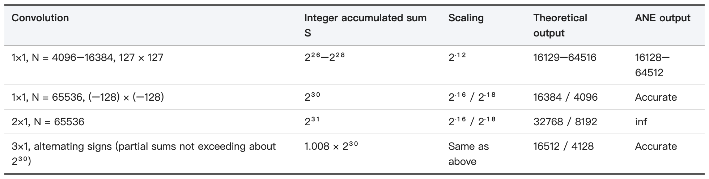
Table 8-4 shows that the accumulator of the INT8 path is a 32-bit signed integer: the result is accurate when S = 2³⁰, and it overflows when S = 2³¹ (that is, one more than the maximum value of int32). Overflow is independent of the magnitude of the output value. With a scaling of 2⁻¹⁸, the output corresponding to S = 2³¹ is only 8192, and it still overflows. As on the FP16 path, the overflowed result is infinity rather than saturation. The output of the first row reaches 64512, exceeding the 32768 ceiling of the FP16 path. This indicates that accumulation on the INT8 path is performed in the integer domain, with scaling applied at the end, and does not pass through the fixed-point accumulator of the FP16 path 〔numerical〕. The maximum of an Int8 × Int8 product is 2¹⁴, so an output point must accumulate about 130,000 maximum products before it overflows. The product of the input channel count and the kernel area in common networks is far smaller than this quantity, so overflow on the INT8 path almost never occurs in practice.
8.4 Element-Wise Operations: Floating-Point Path
Elementwise operations are executed by the PE. We tested addition and multiplication by the method of Section 8.1, and the results are shown in Table 8-5 (data: numerics3_m6.txt, numerics4_m6.txt) 〔numerical〕.
Table 8-5. Numerical behavior of elementwise operations
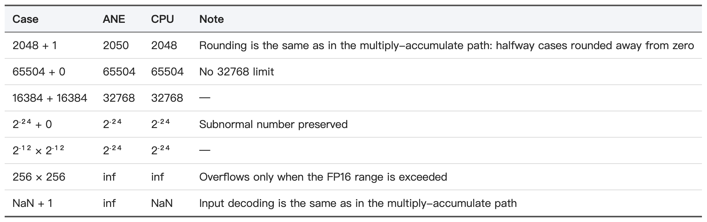
Table 8-5 shows that the results of elementwise operations differ from those of the multiply-accumulate path in two respects. In range, the result of elementwise addition can exceed 32768. For example, 65504 + 0 yields the correct 65504, and overflow to infinity occurs only when the result exceeds the maximum value of FP16. In precision, subnormal numbers such as 2⁻²⁴ are preserved in full, whereas the resolution of the multiply-accumulate path is only 2⁻¹⁶. Neither property is consistent with the Q15.16 fixed-point accumulator; both are consistent with the behavior of FP16 floating-point arithmetic. We therefore infer that the PE operates in FP16 floating-point format and uses a different arithmetic unit from the one used by the MAC array 〔numerical, inferred〕. This is consistent with the division of labor described by Bryngelson [5], in which the NE performs multiply-accumulate and the PE performs elementwise operations. On the other hand, the two paths share the same rounding method (halfway cases rounded away from zero) and the same input decoding method (inf and NaN are decoded as ordinary numbers), and we speculate that the two paths share the same format-conversion logic 〔inferred〕.
8.5 Activation Functions
8.5.1 Structure of the Lookup Tables
maderix [4] found on the M4 that activation functions such as sigmoid are implemented by 33 FP16 sampled points stored in the __KERN_0 segment, combined with linear interpolation. To obtain the complete implementation of each function on the M6, we compiled for each activation function a small model consisting of "a 1×1 convolution plus the activation function", and read the non-weight data from the __KERN_0 segment of the compiled artifacts (tool: opvariants.py; artifacts: opv_hwx/). The table for sigmoid and similar functions is located at offset 0x8 from the beginning of the segment. The tables for sqrt, rsqrt, inverse, log and floor have separate symbols of the form K<hash>_actlut. Field tracing shows that, in the NE configuration, the nonlinearity mode distinguishes only three classes, "none", "ReLU" and "table lookup". Sigmoid, tanh, GELU and others are all written as the same "table lookup" value (Table 5-13), and which function is implemented is determined entirely by the table contents 〔compiler〕. Table 8-6 summarizes the table contents of each function 〔HWX〕.
Table 8-6. Contents of the activation-function lookup tables (33 FP16 values each)
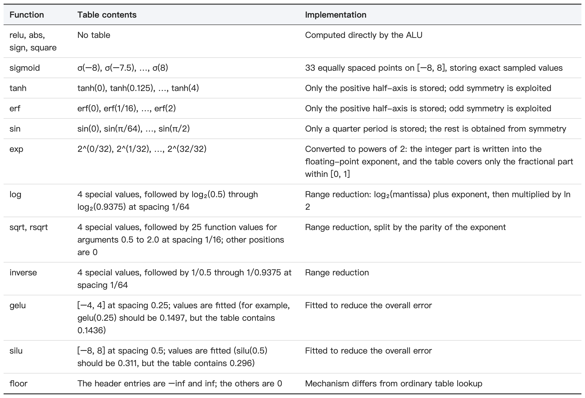
All table-lookup functions use linear interpolation between 33 sampling points, but the sampling grids differ among functions. The compiler uses two techniques to let the limited 33 points cover as high a precision as possible. For functions with symmetry (tanh, erf, sin), only part of the interval is stored, and the rest is obtained from symmetry. For exp, log, sqrt, rsqrt and inverse, the input is first reduced to one octave, the exponent part is handled separately, and the table covers only the reduced interval. In addition, the table values for gelu and silu are not exact sampled values of the functions. They are results fitted to minimize the error over the entire interval 〔HWX〕.
8.5.2 Errors
We took about 16,000–20,000 distinct FP16 inputs over the domain of each function (using a logarithmic grid for functions defined on positive inputs), used the exact float64 values as reference, and compared the errors of the ANE and of the CPU (FP16). The results are shown in Table 8-7 and Figure 8-2 (tools: lut_err.py, lut_plot.py; data: f3_lut_m6.txt, lut_m6/) 〔numerical〕.
Table 8-7. Errors of the activation functions (reference: exact float64 values)
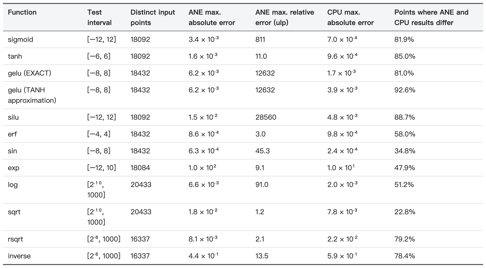
The table reports both absolute and ulp errors. The absolute error is the absolute value of the difference between the ANE output and the exact value. The ulp error divides this difference by the distance between two adjacent FP16-representable numbers within the exponent interval containing the exact value, and so measures the error in units of FP16 representation intervals. Specifically, when |exact value| ∈ [2ᵉ, 2ᵉ⁺¹), 1 ulp = 2ᵉ⁻¹⁰; when |exact value| < 2⁻¹⁴, 1 ulp = 2⁻²⁴. The size of the ulp therefore varies piecewise with the exponent interval, consistent with how NumPy's spacing function defines it for FP16 (tool: lut_ulp.py; data: lut_ulp_m6.txt). The two metrics reflect error scales of different magnitudes and must be interpreted together with the output characteristics of each function. For functions whose outputs are bounded and approach zero over some intervals (sigmoid, gelu, silu), the FP16 ulp is extremely small when the exact value is close to zero. Even when the absolute error is small, it may correspond to hundreds or even thousands of ulps, so the absolute error better reflects the practical deviation. For example, the maximum error of sigmoid reaches 811 ulps, occurring at x ≈ −9.94. There the exact value is only about 4.8 × 10⁻⁵, while the ANE saturates directly to 0 for inputs outside [−8, 8]. Conversely, for functions with a large dynamic range of outputs (exp, sqrt, rsqrt, inverse), the spacing of FP16 representable values grows as the output magnitude increases. A larger absolute error therefore does not necessarily indicate lower numerical precision, and the ulp error is more comparable. For example, the maximum absolute error of exp can reach 100, but after conversion it is only 9.1 ulps.
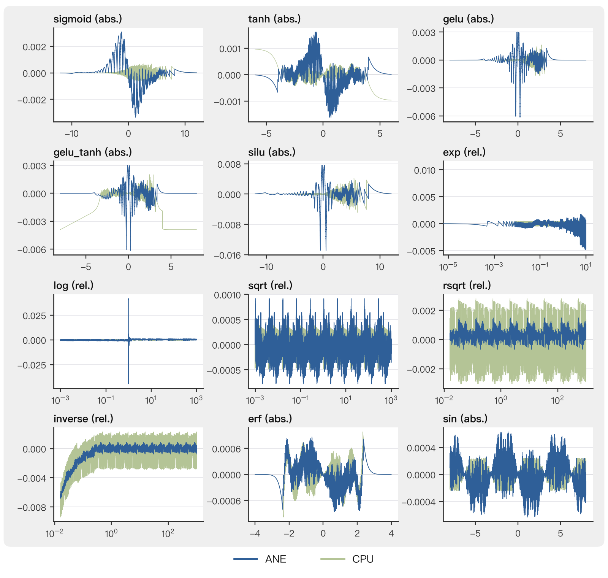
Figure 8-2. Errors of the activation functions on the ANE (tool: lut_plot.py; data: lut_m6/).
The distribution of errors corroborates the structure of Table 8-6, and Figure 8-3 enlarges the error curves of four of these functions. The error of sigmoid drops to its minimum at each sampling point, and at the sampling points the error is only 4–11% of the error at the midpoint of the adjacent interval, a typical feature of equally spaced sampling with linear interpolation. Beyond ±8, the output of sigmoid saturates directly. The discontinuity of tanh at ±4 arises precisely because the table covers only [0, 4], and values beyond that range saturate directly. The ANE output of silu agrees with x multiplied by the ANE sigmoid(x) at only 38% of points, indicating that silu uses its own lookup table rather than being composed from sigmoid. The zeros of the error of gelu and silu do not lie on the equally spaced grid, which is a consequence of the table values being fitted. The errors of sqrt and rsqrt do not exceed 1.2 and 2.1 ulps, respectively. maderix [4] concluded from errors of this kind that these functions are computed by dedicated hardware. The results of this report show that range reduction alone is sufficient for a 33-point lookup table to reach this accuracy, so dedicated hardware is not necessarily required 〔HWX, numerical, inferred〕. One further point deserves attention. On the ANE, the EXACT mode and the TANH approximation mode of gelu use the same table, and their outputs are bit-identical, whereas on the CPU the two modes differ at 78% of points. Consequently, the choice of gelu mode on the ANE does not affect the result.
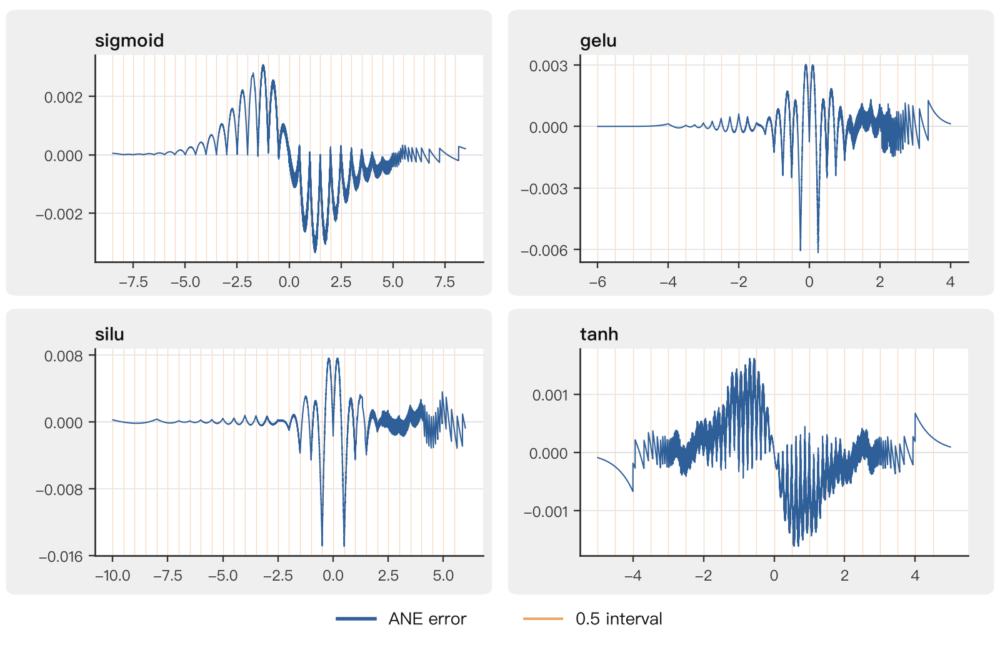
Figure 8-3. Close-up of the absolute errors of sigmoid, gelu, silu and tanh on the ANE (ANE output minus the exact float64 value). The light blue vertical lines mark intervals of 0.5, corresponding to the grids of the sigmoid and silu lookup tables; the grids of tanh and gelu are 0.125 and 0.25, respectively (tool: lut_plot.py; data: lut_m6/).
8.6 Comparison with the M4 and the Literature
We repeated the basic tests of the FP16 multiply-accumulate path on the M4 (h16g). These tests covered the overflow points for a single input and for the sum of two numbers, the retention and discarding of subnormal inputs, output rounding, and the scaling under different weights. The results are identical item by item to those on the M6 (data: numerics2_m4.txt) 〔numerical〕. This shows that the Q15.16 fixed-point accumulator and the rounding method have remained unchanged since at least the H16 generation. The decoding of inf and NaN was not tested separately on the M4. The bias, the exponent rule for tiny products, the INT8 path, elementwise operations and activation functions were tested only on the M6. Table 8-8 compares the results of this report with the description by Bryngelson [5].
Table 8-8. Comparison of numerical behavior with the literature
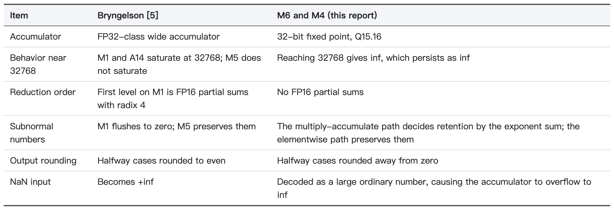
The differences between the two may have two sources. First, hardware of different product generations may actually differ. Second, the test methods may differ. For example, the saturation at 32768 described by Bryngelson and the overflow to inf at 32768 reported in this report point to the same bound, 2¹⁵, and this bound is exactly the limit of the integer part of the Q15.16 fixed-point format.
8.7 Summary
This chapter addressed how the ANE computes numerical results on its different arithmetic paths. The FP16 convolution and matrix multiplication use a 32-bit fixed-point accumulator (Q15.16). Its absolute value overflows to infinity upon reaching 32768, its resolution is 2⁻¹⁶, the bias is the initial value of the accumulator, and the final result is rounded to FP16 with halfway cases rounded away from zero. The INT8 convolution uses a 32-bit integer accumulator, and scaling is performed after accumulation completes. Elementwise operations use FP16 floating-point arithmetic that preserves subnormal numbers. The overflow results of all three paths are infinity rather than saturation. Activation functions are implemented by lookup tables with 33-point linear interpolation, and the maximum errors of commonly used activation functions are on the order of 10⁻³ to 10⁻². The basic behavior of the FP16 multiply-accumulate path was retested on the M4, and the results are identical.
The conclusions of this chapter are all measured on individual operators. The accumulation test uses a 1×1 convolution with 64 input channels, which completes accumulation within a single pass. For layers that require multiple passes or multiple TDs to complete accumulation, we did not test whether partial sums are relayed through FP16, and this report does not evaluate how these numerical behaviors accumulate in a complete network. In Chapter 14, when images are processed one at a time, the top-1 results disagree with the GPU, and the conclusions of this chapter can only rule out the summation order within a single pass as a cause. Whether the M1 and M5 likewise use a fixed-point accumulator, and whether the difference from the "FP32-class accumulator" in the literature arises from hardware or from test methods, remain to be verified (Section 16.2). The deployment recommendations derived from the conclusions of this chapter are collected in Section 15.2 (Table 15-1).
References
[1] maderix. Inside the M4 Apple Neural Engine, Part 1. https://maderix.github.io/articles/inside-the-m4-ane-part-1/, 2026.
[4] maderix. Inside the M4 Apple Neural Engine, Part 4: The Complete Machine. https://maderix.github.io/articles/inside-the-m4-ane-part-4/, 2026.
[5] S. H. Bryngelson. Apple Neural Engine: Architecture, Programming, and Performance. arXiv:2606.22283, 2026.